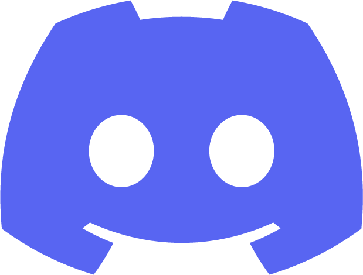

Minä
Minä, Rebecca, uskon olevani se hiomaton timantti, mitä teidän talossanne saatetaan kaivata.
Olen oikea visuaalinen ihme. Muotoilu, suunnittelu ja luovuus ovat hyvin hallussani sekä omaan vahvan työmoraalin olemalla erittäin huolellinen.
Omistaudun kunnolla sille mitä teen ja olen vastuuntuntoinen.
Jotta menee vielä vähän enemmän kehujen puolelle, niin lisätään maininta organisointikyvyistäni. Olen hyvin järjestelmällinen ja tarkka.
Esimerkiksi huolellisesti tehty dokumentaatio on mielestäni tärkeää ja tukee paitsi etenemistä, niin myös taaksepäin tarkastelua.
Persoonana olen kuitenkin lämminhenkinen ja huomaavainen, mitä sosiaaliselta introvertilta yleensäkin voisi odottaa.
ISFJ sopii kuin nenä päähän, mikä jos ei ole kuvauksena muuten tuttu, niin huomioithan esittelytekstini kokonaisuudessaan.
Kaikki mitä edellä sanon, niin sitä ehdottoman isosti olen ja annan.
Eli toisin sanoen loistava tiimipelaaja ja tekijä, joka kuluttaa varmasti itsensä loppuun jos liikaa vastuuta kaadetaan niskaan.
Sitä ei kuitenkaan kannata sinällään säikähtää, sillä elämänkokemusta löytyy ja se on antanut hyviä valmiuksia haasteisiin.
Mitä teen?
Opiskelen kirjoitushetkellä toista vuotta Oulun ammattikorkeakoulun ( ) monimuoto-opiskelijana tietotekniikkaa ohjelmistokehityslinjaa.
Paikka- tai aikasidonnainen tämä opintie ei siis ole. Työlle on hyvin järjestettävissä aikaa päivisin.
Asun perheeni kanssa Tampereen läheisyydessä ja autoilen. Työksi minulle käy niin fyysinen toimisto Tampereen tai Hämeenlinnan seudulla kuin hybridi- tai etämalli valtakunnallisesti.
Alempana kerron mm. taulukon muodossa vielä lisää tähän mennessä hankitusta osaamisestani ja siitä edelleen alempana yhteydenmuodostamiseen tarvittavat kilkkeet, olkaa hyvä!
Osaaminen
Tässä seuraavassa taulukossa pointattuja asioita osaamisestani. Hieman alempana sitten kerron, mitä odotan työpaikalta sekä millaiset asiat viitoittavat tietäni siinä.
Koulussa hankittu osaaminen on antanut lähinnä perusteet, mutta esimerkiksi projektikursseilla saatu hieman syvällisempää kosketusta asioihin.
Todellinen syventyminen tapahtuu sitten kuitenkin siellä työelämässä.
Haluan kehittyä hyväksi tekijäksi
| Ammatillinen osaaminen | Kieli / Tekniikka | Arvosana |
|---|---|---|
| Digitaalitekniikka | Arduino Uno, Arduino IDE | 5 |
| Johdatus ohjelmointiin | C-kieli, Qt Creator, VSC | 5 |
| Sähköturvallisuus ja elektroniikan perusteet | LTSpice, Excel | 5 |
| Tietotekniikan sovellusprojekti | C-kieli, C++ | 5 |
| Olio-ohjelmointi ja oliopohjainen suunnittelu | C++, Qt Framework, Git | 5 |
| Tietokannat ja rajapinnat | MySql, JavaScript, Node.js, express.js, resti-api, Git, VSC, Postman | 4 |
| Ohjelmistokehityksen sovellusprojekti | C++, UML, Qt Framework, Git, MySql, JavaScript, Node.js, express.js, Docker, Pankkiautomaatti | ATM | 5 |
| Java-ohjelmointi | Java, Rest, Springboot, kurssin harjoitustyö "Room Creator" | ? |
| Web-ohjelmoinnin perusteet | HTML, CSS, JavaScript, Bootstrap | ? |
| Pilvipalvelut | AWS, Azure, Robot Framework, Vue | 5 |
| Web-ohjelmoinnin sovellusprojekti | Node.js, Rest, React | ? |
| Software Automation using Robot Framework | Robot Framework, Python | H |
| Introduction to Artificial Intelligence | H | |
| Scrum Basics | H | |
| Muu hankittu osaaminen | Yleisesti | |
| Microsoft Office | Excel, Powerpoint, Word | |
| Video- ääni- ja kuvaeditointi | Corel, Magix yms. työkalut |
Voit tarkastella sitä isommalla ruudulla.
Mitä odotan työpaikalta?
Lähtökohtaisesti haen työtä niillä ajatuksilla, että haluan jatkossakin kehittää itseäni sekä olen orientoitunut palvelemaan yritystä ja projekteja niiden asettamien tarpeiden ja vaatimusten mukaisesti.
Tällä tarkoitan sitä, että esimerkiksi ohjelmointikieli saa olla mitä vaan, koska kaiken voi oppia.
Mistä olen kiinnostunut?
Aloitan mielelläni jostakin, mihin juniori on paikallaan ja missä pääsee totuttautumaan alan työhön ja käytäntöihin.
Olen kiinnostunut tällä hetkellä mm. testiautomaatiosta sekä tekoälyn käyttämisestä ja kehittämisestä.
Tulevaisuutta ajatellen merkityksellinen työ ja projektit kiinnostavat. Voisin hyvin nähdä itseni joskus kriittisten järjestelmien tai maanpuolustuksellisten tehtävien parissa.
Yhteys

 linkedin.com/in/rebecca-soisenniemi-72607a2a3
linkedin.com/in/rebecca-soisenniemi-72607a2a3

LadyIcebreaker#1285 rebecca.soisenniemi@outlook.com
rebecca.soisenniemi@outlook.com